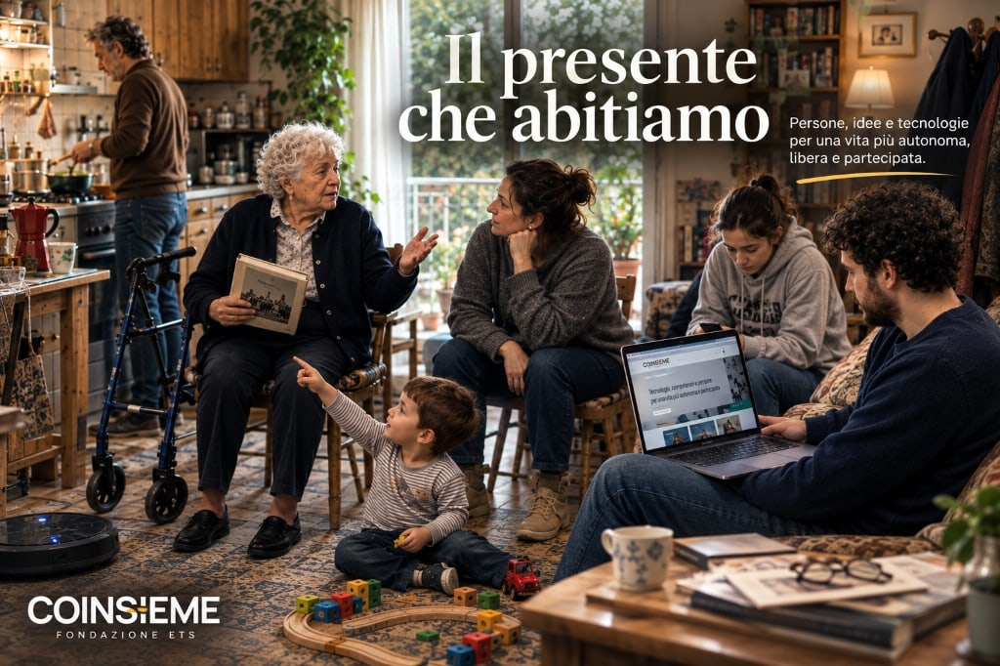

La vita non cambia mai in un solo punto.
Cambiano il lavoro e le famiglie, i modi di comunicare e di mantenere le relazioni, gli ambienti che abitiamo e le aspettative con cui guardiamo al futuro. Cambiano i bisogni delle persone, le responsabilità quotidiane e gli strumenti attraverso i quali cerchiamo informazioni, prendiamo decisioni e partecipiamo alla vita sociale.
L’allungamento della vita ci permette di attraversare stagioni che un tempo erano più brevi, ma ci pone anche davanti alla possibilità che alcune autonomie diminuiscano. Le famiglie si trovano ad affrontare passaggi e responsabilità per i quali non sempre si sentono preparate. Le persone più giovani dispongono di conoscenze e strumenti nuovi, mentre il lavoro, la casa e la precarietà possono rendere più difficile immaginare e costruire il proprio futuro.
Siamo sempre più connessi e, nello stesso tempo, possiamo sentirci soli o disorientati. Intorno a noi riemergono conflitti, chiusure e divisioni che sembravano appartenere a un’altra stagione.
Questo non significa guardare al presente con pessimismo. Significa riconoscerne la complessità: le possibilità e le difficoltà possono convivere nella stessa società, nella stessa famiglia e, spesso, nella stessa persona.
Quando l’innovazione diventa progresso
È dentro questa vita che entrano innovazione e tecnologia.
Nuovi strumenti possono aiutarci a comunicare, lavorare, abitare con maggiore autonomia, accedere a conoscenze e servizi, superare distanze e mantenere relazioni. Possono offrire possibilità che fino a pochi anni fa sarebbe stato difficile immaginare.
Ma innovazione e progresso non sono sinonimi.
Una tecnologia può essere molto avanzata e rimanere difficile da utilizzare. Un servizio può diventare digitale e risultare meno accessibile per alcune persone. Uno strumento può aumentare le connessioni senza ridurre la solitudine.
Il progresso acquista un significato umano quando contribuisce a migliorare le condizioni nelle quali una persona vive: quando ne sostiene l’autonomia e la dignità, ne rispetta le scelte, ne amplia la libertà di movimento e di partecipazione, permette di mantenere relazioni e di continuare a progettare la propria esistenza anche quando le condizioni personali, familiari o ambientali diventano più complesse.
La questione non è quindi soltanto che cosa gli strumenti del nostro tempo siano capaci di fare. È come scegliamo di comprenderli, utilizzarli e orientarli nella vita reale delle persone.
Scegliere di stare nel presente
È in questo tempo che COINSIEME vuole continuare a operare, nelle proprie dimensioni e possibilità.
Non pensiamo di possedere risposte già definite né di poter indicare agli altri una direzione. Possiamo però osservare ciò che cambia, ascoltare le persone, comprendere meglio i bisogni, mettere a disposizione esperienze e conoscenze, sperimentare strumenti, verificarne l’utilità e incontrare competenze differenti dalle nostre.
Abbiamo una storia alle spalle, ma il nostro sguardo è rivolto a ciò che possiamo provare a fare oggi e a quanto resta ancora da costruire.
L’esperienza accumulata non è una risposta da riproporre senza modifiche. Può diventare utile se entra in dialogo con bisogni nuovi, altri punti di vista, nuove competenze e strumenti che allora non esistevano.
Stare nel presente significa anche accettare di imparare, riconoscere i propri limiti e collaborare con chi osserva gli stessi problemi da prospettive differenti.
Quello che stiamo provando a fare oggi
Questa posizione comincia a prendere forma in alcuni ambiti sui quali COINSIEME sta già lavorando.
Nell’autonomia e nella domotica assistiva proviamo a partire dalla vita della persona e dagli ambienti che abita, per comprendere quali strumenti possano sostenerne concretamente scelte, movimenti, sicurezza e relazioni. La tecnologia non viene prima del bisogno e non sostituisce l’ascolto: acquista valore soltanto quando entra con misura nella quotidianità.
La formazione rappresenta un altro terreno di lavoro. Le trasformazioni in corso richiedono competenze nuove, ma anche la capacità di unire conoscenze tecniche, attenzione alla persona e comprensione dei contesti sociali. Formare non significa soltanto trasmettere nozioni: significa imparare a osservare, valutare e costruire risposte insieme.
Ci occupiamo inoltre di inclusione e di superamento delle barriere, comprese quelle digitali, perché l’accesso a informazioni, servizi e opportunità condiziona sempre più la possibilità di partecipare pienamente alla vita sociale.
Accanto alle attività già avviate, stiamo approfondendo l’uso consapevole dell’intelligenza artificiale e di altri strumenti emergenti. Sono campi di studio e sperimentazione, non soluzioni già disponibili o promesse da formulare in anticipo. Ci interessa comprenderne possibilità, limiti e conseguenze, cercando collaborazioni con persone e organizzazioni che possano portare competenze ed esperienze diverse.
Il filo comune non è la tecnologia. È la possibilità che conoscenze, strumenti e relazioni contribuiscano ad aumentare la libertà delle persone e a migliorare l’ambiente umano e sociale nel quale vivono.
Perché un nuovo sito
Da questa scelta nasce il nuovo sito della Fondazione COINSIEME.
Non lo abbiamo costruito soltanto per raccontare chi siamo o presentare ciò che facciamo. Il sito vuole rendere visibile il lavoro in corso, mettere in circolo esperienze e conoscenze, condividere progetti e domande e permettere alle persone di raggiungerci.
È uno spazio istituzionale nel quale informare con maggiore chiarezza, documentare attività e percorsi e rendere più accessibili contenuti e contatti. Ma vuole essere anche un varco di comunicazione: un luogo attraverso il quale incontrare persone, famiglie, professionisti, organizzazioni, istituzioni, idee e competenze nuove.
Il sito non è la destinazione finale di questo percorso. È uno degli strumenti attraverso cui vogliamo aprire il lavoro della Fondazione al confronto e a possibili collaborazioni.
Non sappiamo in anticipo quali incontri nasceranno né quali possibilità potranno emergere. Possiamo però scegliere di rendere questo spazio disponibile, ascoltare ciò che emergerà e verificare che cosa sarà utile provare a costruire insieme.
Vorremmo iniziare da una domanda che riguarda età, condizioni ed esperienze differenti:
Quando la vita cambia, che cosa aiuta davvero una persona a continuare a scegliere e a progettare la propria vita?